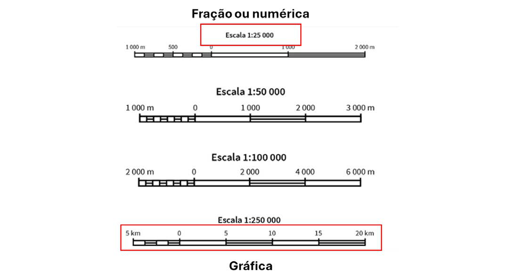
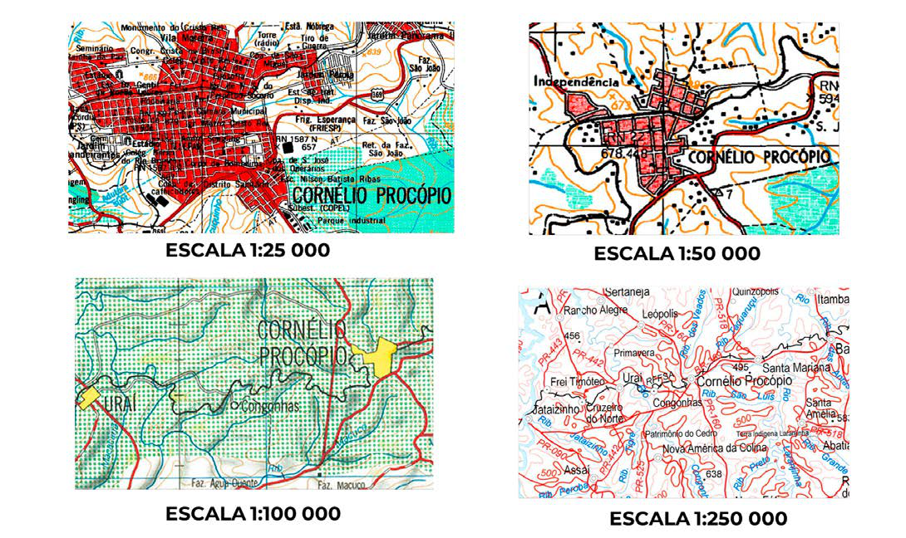

Módulo 3 | Aula 3
Fundamentos da Cartografia
Conceito de escala
A representação espacial se dá através da redução do mundo real, sendo assim a escala é um elemento essencial para os projetos cartográficos. A escolha da escala influencia diretamente na interpretação das informações contidas no documento cartográfico e permite a visualização da informação geográfica em diferentes níveis de detalhamento (MENEZES; FERNANDES, 2013).
A escala é um fator determinante para a delimitação do espaço físico, grau de detalhamento de uma representação ou identificação de feições. É a razão entre uma medida efetuada no mapa e sua medida real na superfície terrestre (MENEZES; FERNANDES, 2013).
Quando se planeja um mapa tem que se determinar a escala certa considerando a finalidade do mapa e conveniência da escala que define a sua construção. Portanto, a escala pode ser entendida como medida que traz a visibilidade ao fenômeno, funcionando como um recorte espacial dando sentido ao que se deseja observar (MENEZES; FERNANDES, 2013).
Uma escala pode ser expressa por uma fração representativa ou numérica, por palavras ou escrita e por meio de uma escala de barras conhecida como escala gráfica.
Figura 11: Tipos de escalas.

Fonte: Adaptada pelo autor de Atlas Escolar IBGE.
Quanto maior a escala de um mapa, maior o nível de detalhamento e quantidade de informação representada, menor a área de abrangência mapeada.
Figura 12: Diferença entre escala e detalhamento.

Fonte: Adaptada pelo autor de Atlas Escolar IBGE.
A escala é a razão onde o denominador representa o comprimento da distância no desenho e o denominador o comprimento real no terreno. Sendo assim, quando temos uma escala 1/50000, podemos interpretar que uma unidade no mapa (cm ou mm) corresponde a 50000 vezes a mesma medida no terreno (MENEZES; FERNANDES, 2013).
O uso da escala gráfica auxilia na determinação dessa razão, onde podemos medir sobre ela com uma régua em cm ou mm quantos km são representados no mapa.
É importante lembrar que os mapas digitais, ao contrário dos mapas analógicos, são dinâmicos e não possuem uma escala fixa. Basta uma simples operação de zoom para alterar a escala do mapa. Isto não significa que não seja importante o conhecimento sobre a escala original do mapa, que deu origem ao mapa digital. Ao contrário, é fundamental esse conhecimento, pois a todo mapa está associado um erro gráfico, que é função direta da escala (MENEZES; FERNANDES, 2013).
Erro e precisão gráfica
A escala está diretamente ligada à precisão de representação do que está sendo observado. Quando se adquire dados derivados de um mapeamento, é importante avaliar o erro gráfico já inerente à sua escala de representação. Uma vez em uma determinada escala o dado só pode servir para uso da escala que foi adquirido, não podendo ser trabalhado em outras representações, em outras escalas (IBGE, 2015).
A precisão gráfica é a menor grandeza medida no terreno, capaz de ser representada em desenho na mencionada escala. Um olho humano permite distinguir uma medida linear de aproximadamente 0,1 mm, e para um ponto em torno de 0,2 mm. Sendo assim, o menor comprimento gráfico que se pode representar em um desenho é de 0,2 mm, que é a menor medida que o olho humano é capaz de distinguir. Esse valor foi então adotado como a precisão gráfica e caracteriza o erro gráfico vinculado à escala de representação (MENEZES; FERNANDES, 2013).
Sabendo que o valor fixo da precisão gráfica de um mapa é 0,2 mm, podemos calcular a precisão de um dado conhecendo a sua escala da seguinte maneira:
E= 1:20.000 ------- 0,2 mm = 4.000 mm = 4 m (E = 0,0002 m × 20.000)
E= 1:10.000 ------- 0,2 mm = 2.000 mm = 2 m (E = 0,0002 m × 10.000)
Para a escolha da escala mais adequada para um mapeamento usamos esse mesmo cálculo, mas consideramos o menor elemento que se quer representar e dividimos pelo erro gráfico. Sendo assim, se quero o menor elemento tendo 10 m, devo calcular 10 m / 0,0002 = 50000 m. Logo teremos uma escala de 1/50.000.